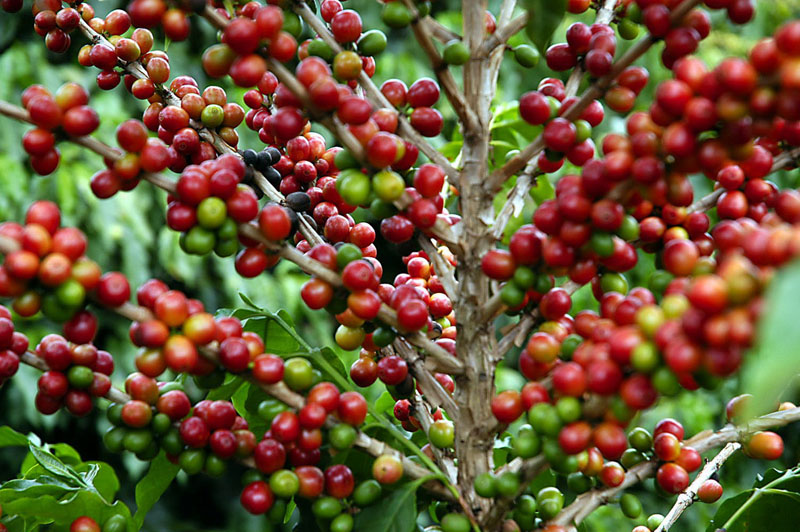
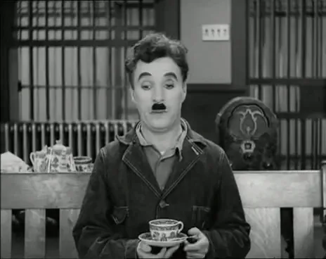
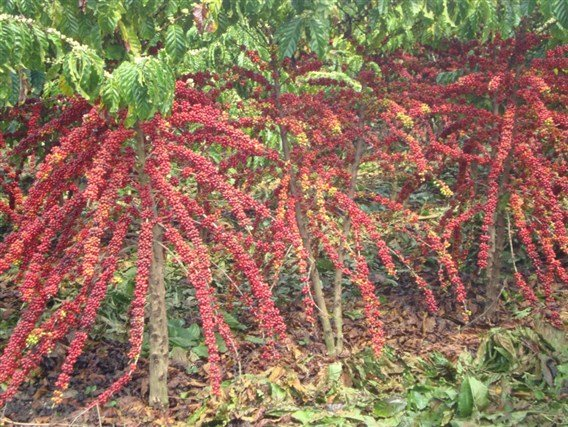
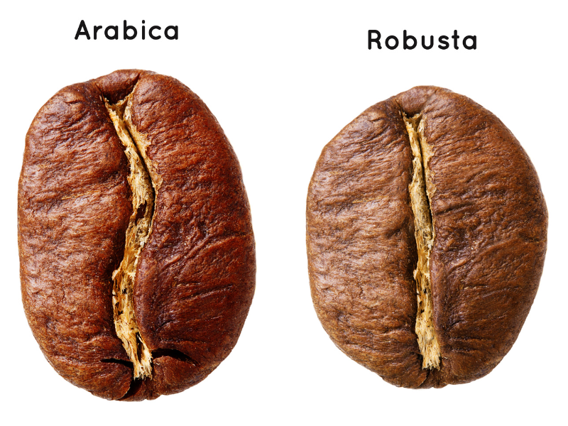
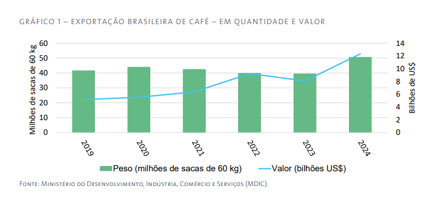
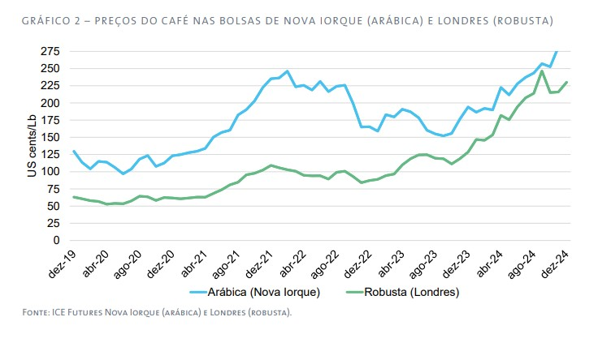

História do Café
O café é uma bebida milenar, conhecida por seu aroma marcante e papel importante em várias culturas. Originário da Etiópia, se espalhou pelo mundo e hoje é símbolo de encontros, trabalho e prazer.



O café arábica (Coffea arabica L.)
Todo apreciador de café sabe que existe uma grande variedade de grãos que apresentam diversos sabores e combinações diferentes. Um dos fatores que mais contribuem para essa variedade são as diferentes espécies da planta. Como, por exemplo, a espécie Coffea arabica, que produz o café arábica, um dos melhores grãos, considerado especial ou gourmet quando 100% Arábica. As suas variedades e subvariedades trazem características específicas em aroma e doçura, com variações em acidez, corpo e sabor, dependendo da mistura de grãos. O café arábica também possui 50% menos cafeína na sua composição.

Aprecie três cafés animados!

Café Conilon ou Café Robusta
Coffea canephora – mais conhecida pela sua variedade Robusta, essa espécie é predominantemente cultivada em regiões como África Ocidental, Central, Sudeste Asiático, e também no Brasil, onde é chamada de Conilon. No Espírito Santo, por exemplo, o Conilon é uma das bases da economia cafeeira, sendo conhecido por sua resistência a pragas e por produzir um café mais encorpado, com maior teor de cafeína. Seus frutos arredondados levam até 11 meses para amadurecer. Sua robustez faz dela uma escolha popular em regiões com climas mais adversos.

Café Conilon ou Café Robusta
Coffea canephora – mais conhecida pela sua variedade Robusta, essa espécie é predominantemente cultivada em regiões como África Ocidental, Central, Sudeste Asiático, e também no Brasil, onde é chamada de Conilon. No Espírito Santo, por exemplo, o Conilon é uma das bases da economia cafeeira, sendo conhecido por sua resistência a pragas e por produzir um café mais encorpado, com maior teor de cafeína. Seus frutos arredondados levam até 11 meses para amadurecer. Sua robustez faz dela uma escolha popular em regiões com climas mais adversos.

O café arábica surgiu nas montanhas da Etiópia e se adaptou bem a regiões de alta altitude. Ele é uma espécie alotetraploide (4n = 44 cromossomos), o que lhe confere maior complexidade genética e sabores mais delicados. Além disso, é autopolinizante, o que facilita o cultivo em lavouras homogêneas.
Já o Conilon tem origem africana (Congo e Uganda) e possui 22 cromossomos (diploide). Diferentemente do arábica, ele depende de polinização cruzada, exigindo variedades compatíveis para garantir boa produtividade. Essa característica, que antes era vista como uma limitação, hoje é trabalhada por melhoristas genéticos para desenvolver cultivares mais resistentes e saborosas.

A produção mundial de café na safra 2024/25 está prevista em 174,9 milhões de sacas de 60 quilos, o que representa uma alta de 4,1% na comparação com a temporada anterior.
A produção de café arábica está prevista em 97,8 milhões de sacas de 60 quilos, correspondendo a uma participação de 56% no total de café produzido no mundo, e aumento de 1,5% na comparação com o ciclo anterior. A produção de robusta está prevista em 77 milhões de sacas de 60 quilos, representando uma participação de 44% no total de café produzido no mundo, e aumento de 7,5% em relação ao ciclo anterior.
O consumo global de café está previsto em 168,1 milhões de sacas de 60 quilos, o que representa um aumento de 3,1% na comparação com o ciclo anterior. O estoque final da safra 2024/25 está previsto em 20,9 milhões de sacas de 60 quilos, o menor das últimas 25 temporadas, representando uma baixa de 6,6% na comparação com o ciclo anterior.

O cenário de estoques reduzidos influenciou a alta dos preços em 2024, mesmo com a recuperação da produção em alguns países. Outro fator altista para os preços em 2024 foi a ocorrência de novas adversidades climáticas em importantes países produtores, que limita a recuperação da oferta futura. O preço médio do café arábica na Bolsa de Nova Iorque, em dezembro de 2024, foi de 322,1 centavos de dólar por libra-peso, valor que representa. aumento de 14,5% em relação ao mês anterior e alta de 66% na comparação com o mesmo período do ano passado. O preço médio do café robusta, em dezembro de 2024, foi de 230,09 centavos de dólar por libra-peso na Bolsa de Londres, o que representa alta de 6,5% em relação ao mês anterior e aumento de 79% na comparação com igual período de 2023.